improvement point
직관적인 UX/UI 개선으로 인한 휴먼에러 제거
기존에는 표(Table)로 구성되어 있었던 상품안내 화면의
레이아웃은 유지하되 각 환경에서는 확인하고자 하는 흐름에 따라
플랜을 파악할 수 있도록 직관적으로 개선을 진행하였습니다.

온라인 쇼핑몰을 소유하지 않고, 오픈마켓에 입점해 있지 않은 사람이
넷상에서 다수의 사람에게 상품을 팔 때, 까다로운 입점 절차, 상품 승인, 계약 등
플랫폼 이용 난이도를 최소화 하여 판매 개시를 가장 빨리 할 수 있는 거래 플랫폼입니다.
Project Overview
기존에 기획의 의도대로 세분화된 플로우의 문제정의 후, UI/UX의 개선과 프로덕트에 맞춰진
UX Writing 포커스를 하고자 하는 행위에 포커스를 맞추고 직관적인 디자인이 도출될 수 있도록 진행하였습니다.
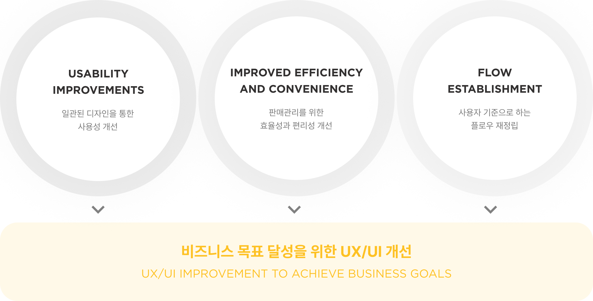
Tracking key indicators
프로젝트 방향
제품의 사용자 유형은 공급자와 수요자로 나누어지는데 진행될 프로젝트가 Phase 1/2단계로 나누어 마일스톤이 설정되어 있었습니다.
해당 상황에서 수요자들이 상품들을 구매하는 지표인
’폼 참여자 수’와 ‘폼 참여 금액’, ‘일일 활성자 수(DAU)’등 주요 지표들의 패턴들을 분석하는 것이 필요하였습니다.
데이터의 패턴을 추적하였을 때, 인기 판매자의 상품 오픈이나 다수의 상품이 동시 오픈될 때 지표가 급상승하는 패턴을 확인했습니다.
이에 따라 사업단에서는 빠른 성장을 위해 수요자보다 공급자를 타겟으로 한 '판매관리 영역' 리뉴얼을 우선 진행하기로 결정 됐습니다.
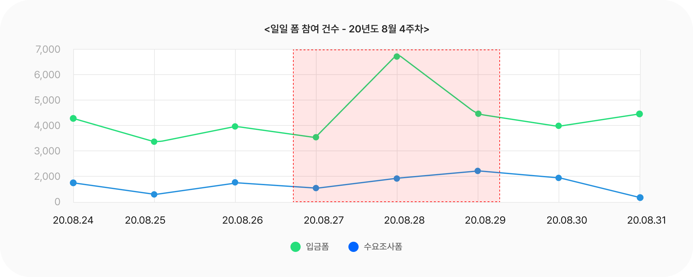
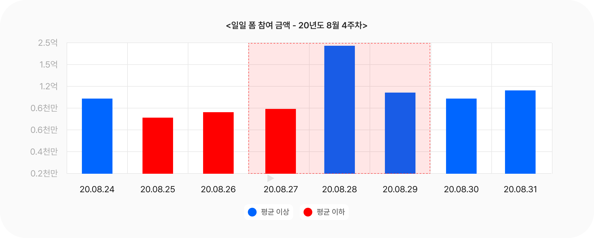
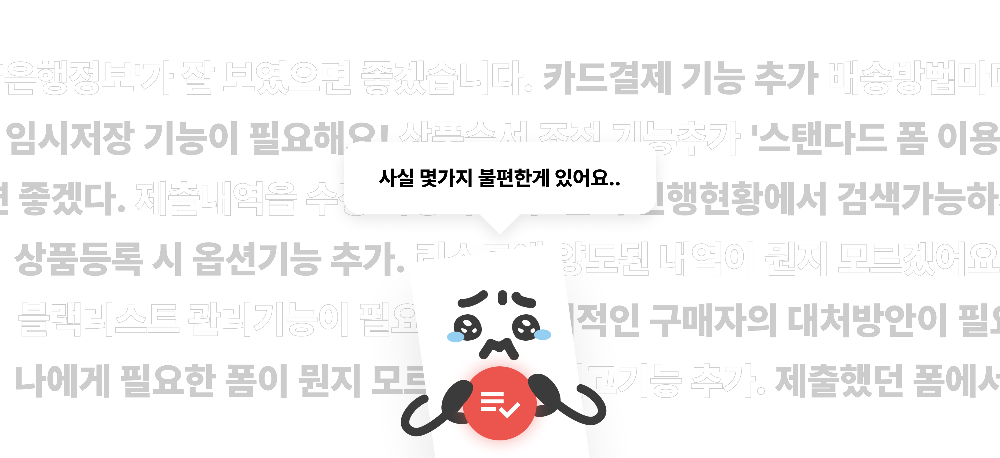
Discover the Problem
개선 배경(가설 정의)
합류 당시 제품의 기본적인 정보 구조와 UX/UI가 전혀 정립되어 있지 않는 상태 였고,
이를 정의하고 명확히 드러나 있는 제품 전반의 문제를 서비스 전체에 적용시켜야 하는 개선 프로젝트를 수행하였습니다.
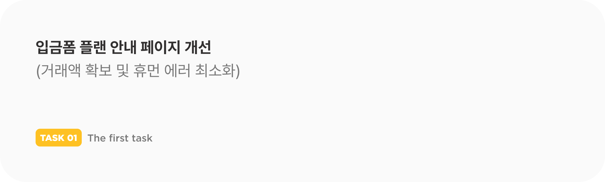
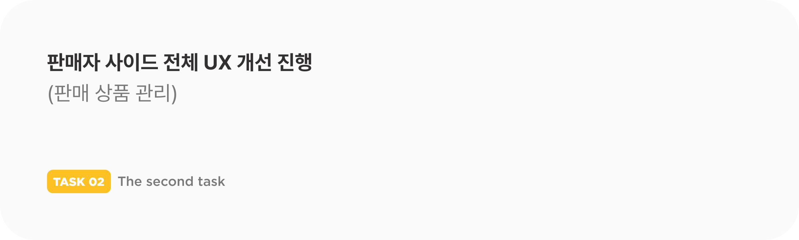
The first task
기존에는 표(Table)로 구성되어 있었던 상품안내 화면의
레이아웃은 유지하되 각 환경에서는 확인하고자 하는 흐름에 따라
플랜을 파악할 수 있도록 직관적으로 개선을 진행하였습니다.
직관적이지 못한 표(Table)의 형태로 인한 오인 발생과
모바일 Tab UI로 인한 유료 플랜 생성율 저하 문제를
카드형 UI로 개선하여 유의미한 상승을 확인했습니다.
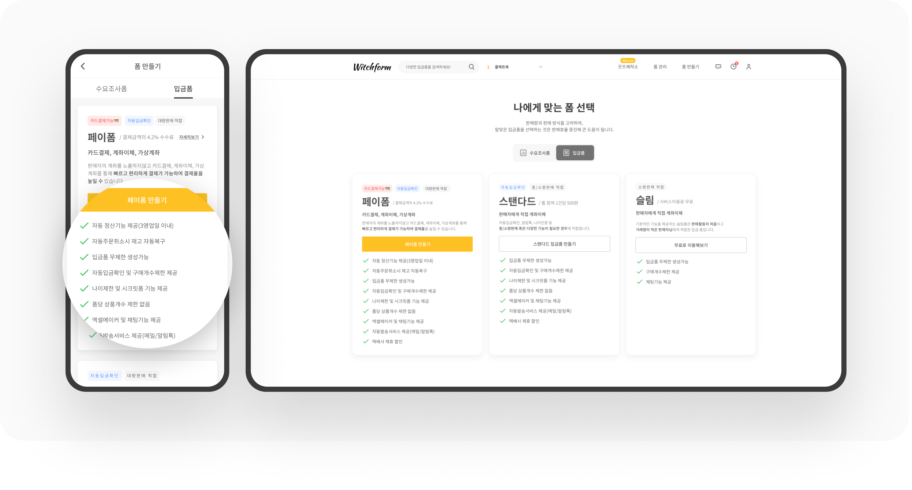
The first task Result
기존에는 Tab UI를 통하여 플랜별로 전환하여 조회하는 구조를 가지고 있던 부분을
카드형 UI를 채택하여 플랜별 특징을 바로 인식할 수 있도록 개선하여 휴먼에러가 발생되는 부분을 해결했습니다.
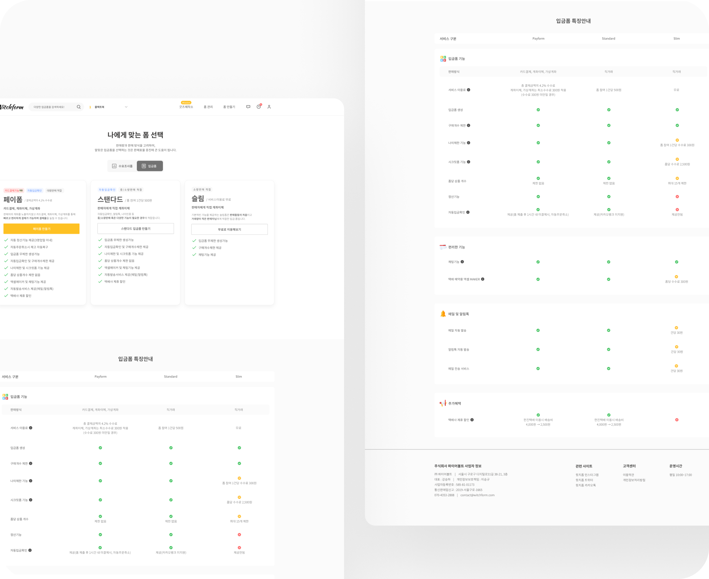
The second task
판매 관련 정보가 한 곳에 집중되어 있어
효율적인 조회/관리가 어려워 직관적인 정보구조 설계가 필요했습니다.
기존에는 웹에서만 판매 관리가 가능하고 모바일은 조회만 지원했으며
비효율적인 UI 레이아웃과 부족한 관리 기능을 개선해야 했습니다.
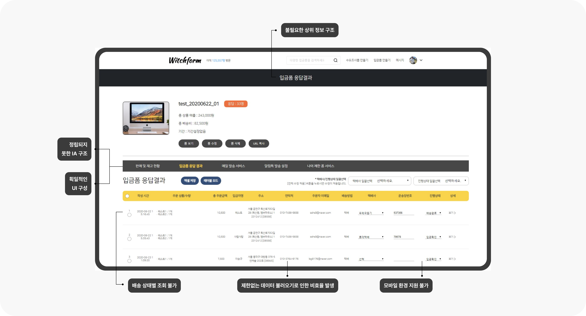
Points of Improvement
판매관리에 해당하는 정보 구조가
한 섹션에 편중되어 있었으며 반복적인 액션을 고려하여
직관적이고 효율적인 접근이 가능하도록 정보구조와 레이아웃을 개선하였습니다.
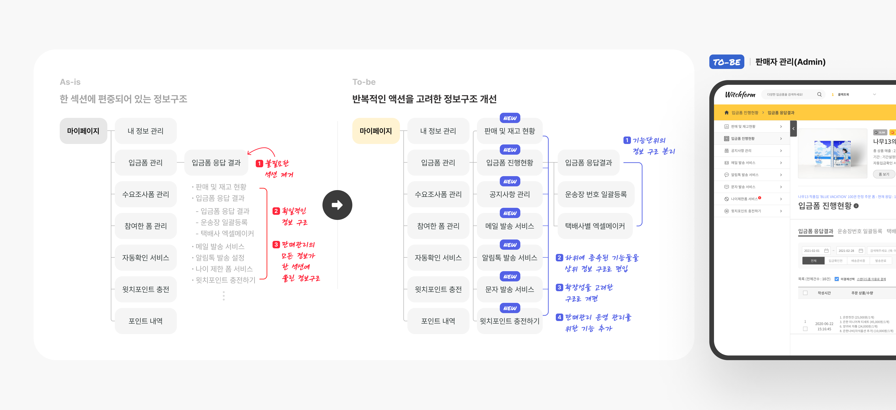
UX/UI Design Direction
상위 정보 구조 한곳에 몰려 있었던 부분을
판매관리의 행위별로 조회할 수 있도록 한단계의
1 Depth를 삭제하여 보다 직관적인 정보구조를 확보하였습니다.
환경별로 구축되어있지 못하였던 부분을
적응형 디자인으로 구현하여 모든 환경에서
언제 어디서든 판매 관리에 대응할 수 있도록 진행 하였습니다.
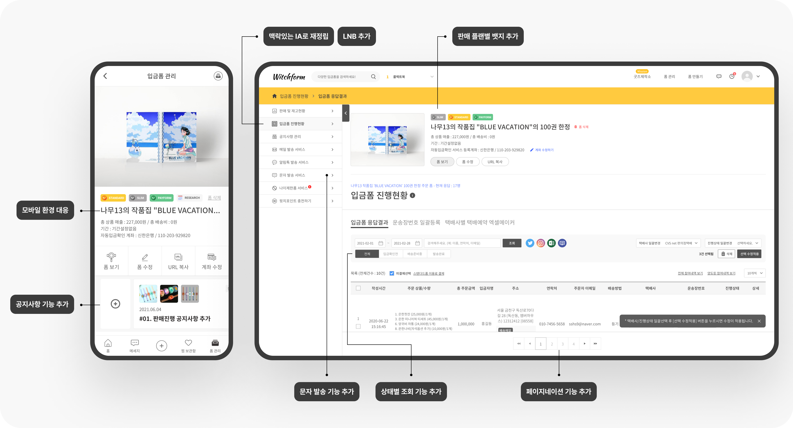
The second task Result
프로젝트 회고 - 공급자 확보 및 활성자 수 증대
개선 이후의 성과지표를 추적한 결과 큰 폭의 유의미한 성과를 얻을 수 있었던 프로젝트 였습니다.
제품 초기단계에서 정확한 페인포인트 분석과 사업단의 결정인
‘판매관리 영역’의 선행되어야 한다는 방향이 유효하게 작용하였다는걸 확인 할 수 있었습니다.
그 결과, 여타 다른 리소스가 투입되지 않는 상황에서 UX/UI 사용성 개선만으로 얻을 수 있었던 성과였습니다.
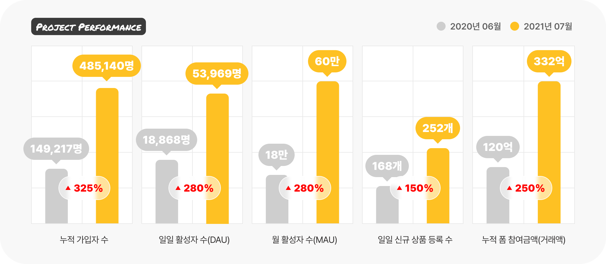